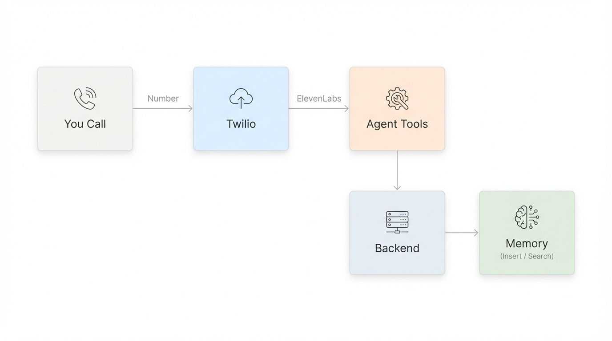
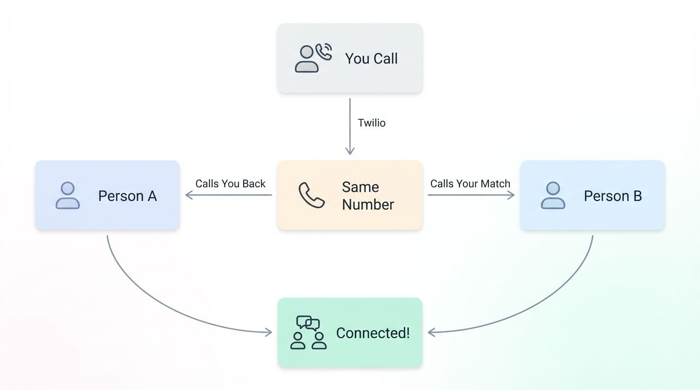

AI Networking Assistant:
Semantic Matchmaking with Voice
An AI system that semantically matches professionals using Pinecone profile embeddings, then facilitates introductions automatically via ElevenLabs voice scripts and Twilio conference calls, with zero manual matching required.


Professional networking is slow and surface-level
Finding the right person to connect with at scale is slow, manual, and based on surface-level criteria. Job title, company, and mutual connections are poor proxies for genuine professional fit.
Most networking tools match on keywords and proximity. They can't understand that someone with 5 years in B2B SaaS growth is a better match for a specific conversation than someone with the word “growth” in their title who works in consumer apps.
The cold introduction problem compounds this: even when a good match exists, facilitating a connection requires a warm introduction or an awkward cold message. Most matches never happen because the friction is too high.
Keywords don't capture professional fit
Semantic similarity understands context and domain. Two people with very different titles can be highly relevant to each other. Keyword matching would never surface that.
Cold introductions don't scale
Even the best match goes nowhere without a warm introduction. Voice-mediated AI introductions reduce the friction of first contact to near zero.
How the matching and introduction flow works
The system has three layers: profile embedding (representing each person as a vector), semantic matching (finding the closest matches in Pinecone), and voice-mediated introduction (Twilio conference + ElevenLabs script).
“The voice introduction is what makes cold connections warm. The AI is doing what a well-connected human matchmaker does, at scale and without fatigue.”
What this revealed about AI-mediated social products
Voice lowers perceived AI-ness
A text introduction that says “AI matched you” triggers scepticism. A voice introduction that contextualises the match triggers curiosity. Medium matters for trust.
Profile quality determines match quality
Sparse profiles produce poor embeddings. The upstream product problem is getting users to provide rich, contextual information, not just job title and company.
- Semantic matching exposes the limits of keyword thinking: Two profiles with almost no keyword overlap can be highly relevant. This only becomes visible when you move to embedding-based matching.
- The introduction script is a product spec: What information the AI surfaces in an introduction, and in what order, determines whether the conversation starts well or awkwardly.
- Conference call timing is UX: How long the introduction plays before unmuting both parties, whether there's a beat of silence, whether the AI says goodbye first, all of these are product decisions.
- Consent is a first-class design requirement: Both parties need to understand and accept that they're speaking to an AI-brokered introduction. Transparency here isn't optional.